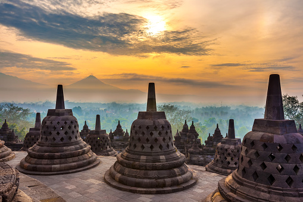

Borobudur merupakan mahakarya seni rupa Buddha Indonesia, sebagai contoh puncak pencapaian keselarasan teknik arsitektur dan estetika seni rupa Buddha di Jawa. Bangunan ini diilhami gagasan dharma dari India, antara lain stupa, dan mandala, tetapi dipercaya juga merupakan kelanjutan unsur lokal; struktur megalitik punden berundak atau piramida bertingkat yang ditemukan dari periode prasejarah Indonesia. Sebagai perpaduan antara pemujaan leluhur asli Indonesia dan perjuangan mencapai Nirwana dalam ajaran Buddha.

Pada hakikatnya Borobudur adalah sebuah stupa yang bila dilihat dari atas membentuk pola Mandala besar. Mandala adalah pola rumit yang tersusun atas bujursangkar dan lingkaran konsentris yang melambangkan kosmos atau alam semesta yang lazim ditemukan dalam Buddha aliran Wajrayana-Mahayana. Sepuluh pelataran yang dimiliki Borobudur menggambarkan secara jelas filsafat mazhab Mahayana yang secara bersamaan menggambarkan kosmologi yaitu konsep alam semesta, sekaligus tingkatan alam pikiran dalam ajaran Buddha. Bagaikan sebuah kitab, Borobudur menggambarkan sepuluh tingkatan Bodhisattva yang harus dilalui untuk mencapai kesempurnaan menjadi Buddha. Dasar denah bujur sangkar berukuran 123 meter (404 ft) pada tiap sisinya.
Bangunan ini memiliki sembilan teras, enam teras terbawah berbentuk bujur sangkar dan tiga teras teratas berbentuk lingkaran. Pada tahun 1885, secara tidak disengaja ditemukan struktur tersembunyi di kaki Borobudur. Kaki tersembunyi ini terdapat relief yang 160 di antaranya adalah berkisah tentang Karmawibhangga. Pada relief panel ini terdapat ukiran aksara yang merupakan petunjuk bagi pengukir untuk membuat adegan dalam gambar relief. Kaki asli ini tertutup oleh penambahan struktur batu yang membentuk pelataran yang cukup luas, fungsi sesungguhnya masih menjadi misteri.
Awalnya diduga bahwa penambahan kaki ini untuk mencegah kelongsoran monumen. Teori lain mengajukan bahwa penambahan kaki ini disebabkan kesalahan perancangan kaki asli, dan tidak sesuai dengan Wastu Sastra, kitab India mengenai arsitektur dan tata kota. Apapun alasan penambahan kaki ini, penambahan dan pembuatan kaki tambahan ini dilakukan dengan teliti dengan mempertimbangkan alasan keagamaan, estetik, dan teknis.
Bagian kaki Borobudur melambangkan Kamadhatu, yaitu dunia yang masih dikuasai oleh kama atau "nafsu rendah". Bagian ini sebagian besar tertutup oleh tumpukan batu yang diduga dibuat untuk memperkuat konstruksi candi. Pada bagian kaki asli yang tertutup struktur tambahan ini terdapat 160 panel cerita Karmawibhangga yang kini tersembunyi. Sebagian kecil struktur tambahan di sudut tenggara disisihkan sehingga orang masih dapat melihat beberapa relief pada bagian ini. Struktur batu andesit kaki tambahan yang menutupi kaki asli ini memiliki volume 13.000 meter kubik.
Empat undak teras yang membentuk lorong keliling yang pada dindingnya dihiasi galeri relief oleh para ahli dinamakan Rupadhatu. Lantainya berbentuk persegi. Rupadhatu terdiri dari empat lorong dengan 1.300 gambar relief. Panjang relief seluruhnya 2,5 km dengan 1.212 panel berukir dekoratif. Rupadhatu adalah dunia yang sudah dapat membebaskan diri dari nafsu, tetapi masih terikat oleh rupa dan bentuk. Tingkatan ini melambangkan alam antara yakni, antara alam bawah dan alam atas. Pada bagian Rupadhatu ini patung-patung Buddha terdapat pada ceruk atau relung dinding di atas pagar langkan atau selasar. Aslinya terdapat 432 arca Buddha di dalam relung-relung terbuka di sepanjang sisi luar di pagar langkan. Pada pagar langkan terdapat sedikit perbedaan rancangan yang melambangkan peralihan dari ranah Kamadhatu menuju ranah Rupadhatu; pagar langkan paling rendah dimahkotai ratna, sedangkan empat tingkat pagar langkan diatasnya dimahkotai stupika (stupa kecil). Bagian teras-teras bujursangkar ini kaya akan hiasan dan ukiran relief.
Berbeda dengan lorong-lorong Rupadhatu yang kaya akan relief, mulai lantai kelima hingga ketujuh dindingnya tidak berelief. Tingkatan ini dinamakan Arupadhatu (yang berarti tidak berupa atau tidak berwujud). Denah lantai berbentuk lingkaran. Tingkatan ini melambangkan alam atas, di mana manusia sudah bebas dari segala keinginan dan ikatan bentuk dan rupa, namun belum mencapai nirwana. Pada pelataran lingkaran terdapat 72 dua stupa kecil berterawang yang tersusun dalam tiga barisan yang mengelilingi satu stupa besar sebagai stupa induk. Stupa kecil berbentuk lonceng ini disusun dalam 3 teras lingkaran yang masing-masing berjumlah 32, 24, dan 16 (total 72 stupa). Dua teras terbawah stupanya lebih besar dengan lubang berbentuk belah ketupat, satu teras teratas stupanya sedikit lebih kecil dan lubangnya berbentuk kotak bujur sangkar. Patung-patung Buddha ditempatkan di dalam stupa yang ditutup berlubang-lubang seperti dalam kurungan. Dari luar patung-patung itu masih tampak samar-samar. Rancang bangun ini dengan cerdas menjelaskan konsep peralihan menuju keadaan tanpa wujud, yakni arca Buddha itu ada tetapi tak terlihat.

Pada dinding candi di setiap tingkatan — kecuali pada teras-teras Arupadhatu — dipahatkan panel-panel bas-relief yang dibuat dengan sangat teliti dan halus. Relief dan pola hias Borobudur bergaya naturalis dengan proporsi yang ideal dan selera estetik yang halus. Relief-relief ini sangat indah, bahkan dianggap sebagai yang paling elegan dan anggun dalam kesenian dunia Buddha. Relief Borobudur juga menerapkan disiplin senirupa India, seperti berbagai sikap tubuh yang memiliki makna atau nilai estetis tertentu.
Relief-relief berwujud manusia mulia seperti pertapa, raja dan wanita bangsawan, bidadari atapun makhluk yang mencapai derajat kesucian laksana dewa, seperti tara dan boddhisatwa, sering kali digambarkan dengan posisi tubuh tribhanga. Posisi tubuh ini disebut "lekuk tiga" yaitu melekuk atau sedikit condong pada bagian leher, pinggul, dan pergelangan kaki dengan beban tubuh hanya bertumpu pada satu kaki, sementara kaki yang lainnya dilekuk beristirahat. Posisi tubuh yang luwes ini menyiratkan keanggunan, misalnya figur bidadari Surasundari yang berdiri dengan sikap tubuh tribhanga sambil menggenggam teratai bertangkai panjang.
created with
Website Builder Software .